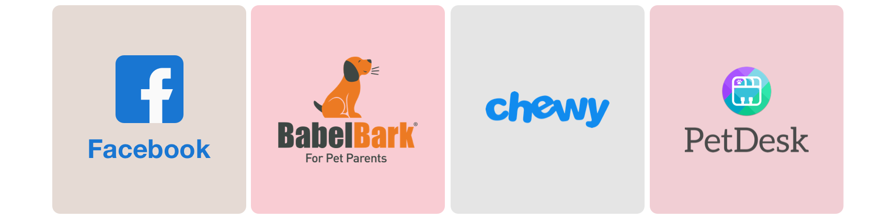
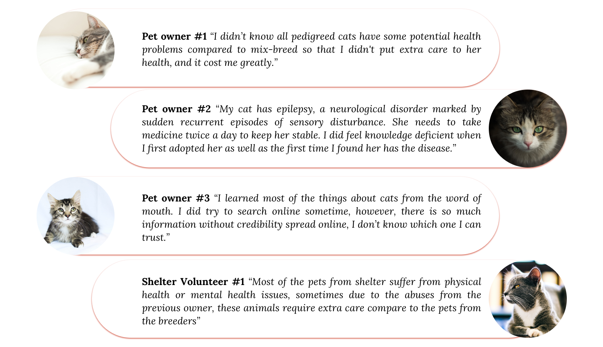

Research
Problem Statement
29% of the American household own cats nowadays. There were 3.2 million cats enter US shelters in 2019 and 71 percent of them were euthanized. According to the ASPCA’s National Rehoming Survey, pet problems are the most common reason that owners rehome their pet, Pet problems were defined as problematic behaviors, aggressive behaviors, grew larger than expected, or health problems owner couldn’t handle. In other words, owners who abandon their cats normally due to their irresponsibility and lack of cat raising knowledge. Base on my previous interview, the sources for how parenting cats are spread on the internet with a lack of reliability and organize. Therefore, there are always situations that their lives can be threatened.
Competitive analysis

Babelbark
Babelbark is a pet health management app that providing services including activity checking(pair with the monitor), medical records, diet analysis.etc.
It requires monthly membership fee.
PetDesk
PetDesk supports appointment making with local vets/grooming within the app,
access pet’s health records and prescriptions.It doesn't providing easy access cat parenting Information inside the app.
Chewy
Chewy is a well-known online retailer for pet’s, it partially supports pet profile.
Facebook local/breed pet group
Facebook local/breed pet group provides opptunities for pet owners to engage and exchange information.
Informal Interviews
I planned 6 informal interviews with total of 6 interviewees including four pet owners and two Shelter Volunteers.
Findings
Some key insights were:
1. Most Owners learn about their cats through word of mouth.
2. The lack of knowledge about cats lead them to future cost of cat health.
3. Some owners don't have the ability to handle their cat's health care.
4. Although cat owners often forgot their cat's examinations and vaccinations date, Examination every 12 month is the most common rate.
5. Cat owners questioning the reliability of the information that spreading online.
6. Cat owners have to go through different platform/ sites looking for information they want.
7. Prescriptions and health records are worth to document in a easily access form.
Initial Project Goal
After the research shows above, I was further confirmed the problem can be mostly solved by better managing cat health and providing easily access information .Therefore, I devided to design a tool that able to furfill the needs.
Prototyping
Wireframe
Low fidelity prototype
high fidelity prototype
{kind=link}
{kind=link}
{kind=link}
{kind=link}